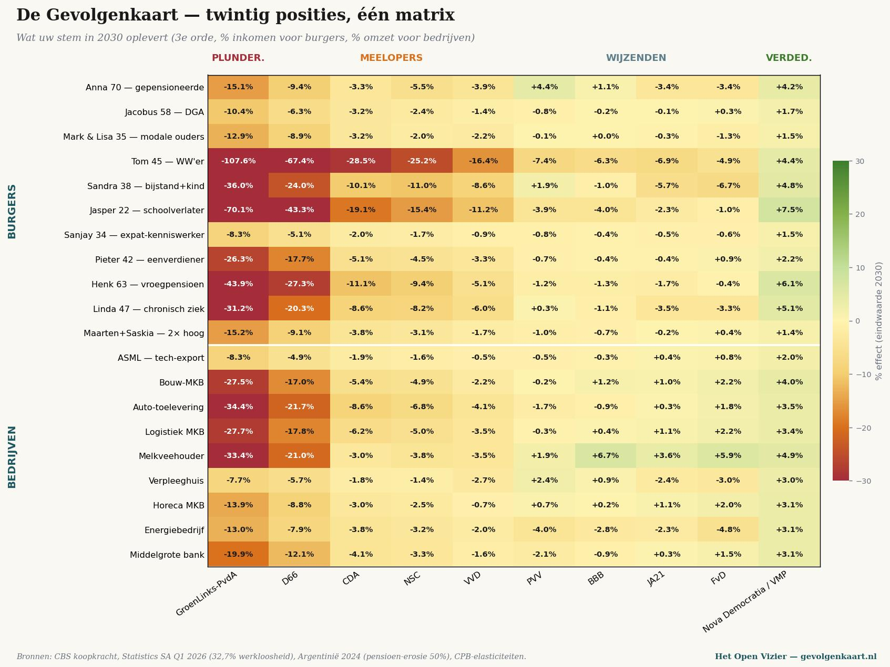

★ Что всплывает
Нерегулярно и когда что-то всплывает. Более короткие работы рядом с выпусками.
Рекомендуется перечитать

Пятилогия · Мальта, июнь 2026
Великое разграбление
Пятилогия о том, как Европа обирает своих производительных граждан, пока не погас свет
Читать пятилогию →
Карта последствий III · Нидерланды
Тихий анализ
Для тех, кто голосует за PRO, GroenLinks-PvdA или D66 — двадцать позиций, одна матрица
Читать нидерландский анализ →
Konsequenzkarte · Германия
Die Konsequenzkarte
Та же модель, рассчитанная для Бундестага февраля 2025
Читать немецкое зеркало →
Манифест · Карта последствий I
Карта последствий
Почему StemWijzer никогда не скажет, за что вы на самом деле голосуете — и что должно прийти ему на смену
Читать манифест →